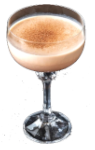

Well, all right, I'll... I'll have a Brandy Alexander.- Mary Tyler Moore
The drink was likely named after Troy Alexander, a bartender at Rector's, a New York City restaurant, who created the drink in order to serve to Phoebe Snow, a character in an advertising campaign in the early 20th century.
Sources say it was created at the time of the London wedding of Princess Mary and Viscount Lascelles in 1922.
Drama criticm Alexander Woollcott said it was named after him. It is also said to be named after the Russian tsar Alexander II.